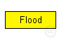
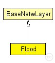

This documentation is released under the Creative Commons license
This documentation is released under the Creative Commons licenseA simple flooding protocol for network-level broadcast.
This implementation uses plain flooding, i.e. it "remembers" (stores) already broadcasted messages in a list and does not rebroadcast them again, if it gets another copy of that message.
The maximum number of entries for that list can be defined in the .ini file (@ref bcMaxEntries) as well as the time after which an entry is deleted (@ref bcDelTime).
If you prefere a memory-less version you should set to false the <verbatim>plainFlooding</verbatim> bool parameter.
Author: Daniel Willkomm
ported to Mixim 2.0 by Theodoros Kapourniotis
The following diagram shows usage relationships between types. Unresolved types are missing from the diagram. Click here to see the full picture.
The following diagram shows inheritance relationships for this type. Unresolved types are missing from the diagram. Click here to see the full picture.
| Name | Type | Description |
|---|---|---|
| BaseNetwLayer | simple module |
Base module for every network layer module |
| Name | Type | Default value | Description |
|---|---|---|---|
| notAffectedByHostState | bool | false | |
| coreDebug | bool | false |
debug switch for core framework |
| stats | bool | false |
stats switch |
| headerLength | int |
length of the network packet header (in bits) |
|
| plainFlooding | bool | true |
flag whether to use plain flooding |
| bcMaxEntries | double | 100 |
Max number of entries in the list of already broadcasted messages |
| bcDelTime | double | 100 s |
Time after which an entry for an already broadcasted msg can be deleted |
| defaultTtl | double | 10 |
Default time-to-live (ttl) used for this module expressed in number of hops. |
| Name | Value | Description |
|---|---|---|
| class | Flood | |
| display | i=block/fork |
| Name | Direction | Size | Description |
|---|---|---|---|
| upperLayerIn | input |
from upper layer |
|
| upperLayerOut | output |
to uppe layer |
|
| upperControlIn | input |
control from upper layer |
|
| upperControlOut | output |
control to upper layer |
|
| lowerLayerIn | input |
from lower layer |
|
| lowerLayerOut | output |
to lower layer |
|
| lowerControlIn | input |
control from lower layer |
|
| lowerControlOut | output |
control to lower layer |
// A simple flooding protocol for network-level broadcast. // // This implementation uses plain flooding, i.e. it "remembers" // (stores) already broadcasted messages in a list and does not // rebroadcast them again, if it gets another copy of that message. // // The maximum number of entries for that list can be defined in the // .ini file (@ref bcMaxEntries) as well as the time after which an entry // is deleted (@ref bcDelTime). // // If you prefere a memory-less version you should set to false the // <verbatim>plainFlooding</verbatim> bool parameter. // // @author Daniel Willkomm // // ported to Mixim 2.0 by Theodoros Kapourniotis // simple Flood extends BaseNetwLayer { parameters: bool plainFlooding = default(true); // flag whether to use plain flooding // Max number of entries in the list of already broadcasted messages double bcMaxEntries = default(100); // Time after which an entry for an already broadcasted msg can be deleted double bcDelTime @unit(s) = default(100 s); double defaultTtl = default(10); // Default time-to-live (ttl) used for this module expressed in number of hops. @display("i=block/fork"); @class(Flood); }
This documentation is released under the Creative Commons license